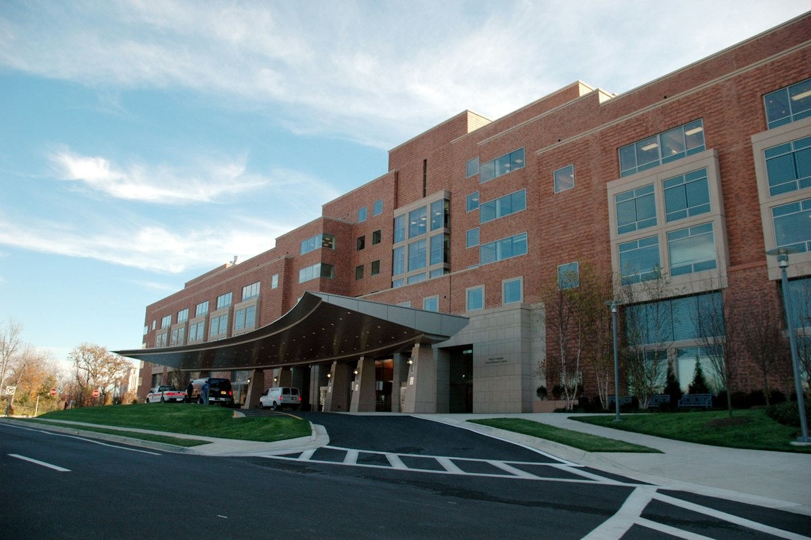

Country Guides
Country GuidesWhy is now the right time to study nursing abroad as a Pakistani student?
Nursing is one of the few professions where the world's demand curve points straight at Pakistani graduates. The UK NHS recruits overseas nurses year after year, Germany funds nursing trainees through a paid apprenticeship, Australia keeps nursing on its skilled migration tables, and every one of those countries is ageing faster than it can train its own workforce. That is why the decision to study nursing abroad for Pakistani students has never been better timed: the shortage is structural rather than a temporary hiring cycle, and it is not going to close on its own. Yet most of the Pakistani nursing advice online is either an agency advert or a one-page listicle that never mentions the assessments you must actually pass, or the fees you must actually pay.
So this guide does something slightly different. It separates the decision into the two routes that genuinely exist, puts honest numbers on both, and tells you which official page to trust whenever an agent tells you something different. Korean drama fans aside, there are no shortcuts on either route, but the roadmap is fully predictable if you follow the right order, and the order is knowable in advance.
What are the two routes for study nursing abroad for Pakistani students?
Route A means applying abroad as a student to earn a foreign nursing qualification, with the destination country doing the training and its own regulator holding the gate. Route B means qualifying in Pakistan first, then moving as an already-registered nurse through the NMC and NHS pathway in the UK, or the Anerkennung recognition route in Germany. They are not two versions of the same journey. Route A costs far more in cash and less in elapsed time; Route B costs far less in money and considerably more in paperwork, assessment and patience.
Which countries hire Pakistani nurses, and what does each one actually want from you?
Four destinations appear in almost every Pakistani student's research: the UK, Germany, Australia and Ireland. They each want something different. The UK wants a recognised degree, English evidence, two passed assessments and a licensed sponsor. Germany wants German language plus willingness to be paid a training salary while you learn. Australia wants a three-year degree plus registration English at 7.0 plus points-based migration. Ireland wants broadly the UK qualification with far fewer seats. Once you know which country matches your budget and your timeline, everything below stops being a guessing game and becomes a checklist.
Key takeaways
What should you take away before you read any further?
If you read nothing else, read this list. It is the compressed version of everything below, and every line traces back to an official regulator rather than to an agency's marketing.
- You have two distinct paths: study-abroad for a foreign nursing degree, or qualify in Pakistan (BSN) and register to work overseas as a nurse.
- For the UK as a qualified nurse, the NMC ends up scoring your degree, asking for IELTS Academic or OET, and making you pass CBT and OSCE; the one-off cost is roughly classed at just over £1,100 plus the annual fee.
- UK student nursing programmes lead to NMC registration after graduation, and the UK graduate visa can then bridge into a Health and Care Worker visa.
- Germany is the lowest-net-cost route: nursing training is a paid apprenticeship, but most paths demand B2 German before you start, and later recognition of foreign qualifications usually asks for C1.
- Australia's bachelor of nursing is popular and PR-friendly, but registration English standards run around 7.0 in each skill area.
- Verify every claim on official pages (NMC, AHPRA/NMBA, Anerkennung portals) because the details change yearly; agency promises that skip these steps are the reddest of flags.
Why do these six points matter more than the rest of this guide?
Because each one is a fork where getting it wrong is expensive and getting it right is cheap. Choosing the wrong route costs you one to three years. Missing the NMC English rule costs you a test fee and a season. Believing an agency that promises a guaranteed PIN costs you the entire fee stack with nothing to show for it. The six points above are the decisions that are irreversible or expensive, which is why they come first.
Why nursing abroad, and who fits it
Who are the three types of Pakistani candidates for nursing abroad?
Pakistani candidates for the international nursing market fall into three fairly distinct bands, and the right advice is different for each.
- The fresh FSc Pre-Medical graduate who wants to study BSc Nursing abroad instead of fighting for a seat in Pakistan. This band usually starts on Route A, and its bottleneck is tuition plus English.
- The graduated nurse with a 4-year BSN or GN who already holds a Pakistan Nursing Council licence and one or two years of experience. This is the strongest candidate for the NHS route, because the employer side of the market wants exactly this profile.
- The experienced mid-career nurse who wants out of bedside practice into teaching, management or research. This band is best served by a postgraduate route in a country with a welcoming visa climate, such as Canada or Australia.
Is it realistic to move straight into a teaching or management role abroad?
As tempting as the third band sounds, honesty about the ladder is required: worldwide, the money is in direct-care nursing first. Your first year abroad is almost always bedside work, in a ward, on shifts. Managerial and educator roles come later, on the strength of that experience, so the realistic version of this guide assumes you are ready to nurse before you are ready to supervise.
The practical consequence is that if you are currently a charge nurse or clinical instructor in Pakistan, do not assume that seniority transfers as currency. It does not, at least not on arrival. What does transfer is a clean record, verifiable hours, strong documentation habits and English you can demonstrate under pressure, and the registries assess you on those rather than on your job title.
Which route fits each band best?
Band one usually fits Route A, because you have no qualification to convert yet, and Germany's paid Ausbildung is the cheapest version of Route A for a low-budget family. Band two fits Route B almost automatically, because the NMC pathway exists precisely to convert an existing BSN into a UK PIN. Band three fits a hybrid: use Route B to get the PIN, then move into a UK master's programme, or use Australia's points-based route to convert a qualification into residency before pursuing postgraduate study. The order matters, because in all three bands the cheap step comes before the expensive one.

Route 1: study nursing abroad as an international student
What does a UK BSc nursing programme actually give you?
UK universities offer NMC-approved pre-registration programmes, most commonly the BSc in Adult, Child, Mental Health or Learning Disabilities nursing. Studying one of these makes you eligible to apply for NMC registration when you graduate, which is the cleanest possible legal route into UK nursing: no CBT and OSCE reassessment of a foreign degree, because the degree was approved in the first place.
That single fact is the whole reason Route A appeals to Pakistani families who can afford it. You arrive as a student, you are taught to UK standards, and the regulator is already inside the process when you finish. The trade-off is that you pay international tuition and living costs for three years while earning nothing, and you still have to clear the university entry conditions on the way in.
What do a UK nursing degree really cost in 2026?
Realistic numbers for 2026: English requirements cluster around IELTS Academic 6.5 to 7.0 overall, with some universities demanding 7.0 in every band and others such as Hertfordshire asking 6.5 across the board. Universities edit these figures over time, so read the specific course page rather than relying on a general number you found in a blog.
On money, international fees for clinical programmes run roughly £17,750 to £30,000 per year at most providers, living costs land around £900 to £1,400 per month per British Council guidance, plus the student visa fee and the Immigration Health Surcharge. Add flights, a first-year deposit, uniforms, a TB screening if your route requires one, and a laptop you will actually use for practice assessments, and the honest three-year total for a Pakistani family without savings is comfortably north of £70,000.
How competitive are funded international nursing places?
Competition is real because funded international nursing places are scarce. Several universities ask for care-experience evidence or an interview before making an offer, which is unusual in British higher education and a signal of how seriously they take clinical safety. That care-experience requirement is often the cheapest advantage available to you: a few months of documented volunteering or ward shadowing in Karachi, Lahore or Peshawar can do more for a UK application than a perfect personal statement, because it proves you understand what the course is actually like.
What are the entry requirements to study nursing abroad as a Pakistani student?
The pathway is: FSc Pre-Medical or A-levels, and frequently a foundation year for direct-entry eligibility, then the three-year BSc, then NMC registration as a new graduate, then the graduate visa, and later a Health and Care Worker visa when you land a sponsored nursing job.
For the visa documents themselves, the UK student visa guidance and the UK visa guide apply to you exactly as they do to every other Pakistani student. Nursing does not skip the ordinary requirements, including the proof of funds and, in some cases, the tuberculosis screening. Academic qualifications need their own route too: a Pakistani FSc certificate usually arrives as a science A-level equivalent, and a BSN, even a partial one, is not usually transferable into a pre-registration BSc because UK courses start from the beginning of clinical formation.
What do you get in Germany's paid nursing apprenticeship?
Germany trains nurses through a three-year dual Ausbildung (vocational training), and unlike a UK degree, it pays you. Recognised training stipends typically land in the range of around €1,000 to €1,400 per month depending on the region and the employer, plus structured classroom weeks and clinical rotations built into the schedule. At the end you sit the German state examination (examen) and become a registered Pflegefachkraft.
The structural advantage is that there is no tuition anywhere in the chain. The structural disadvantage is that you are a worker, not a student, for three years: your pay covers a modest living, not a family, and your leave and mobility are governed by an employment contract rather than a university calendar.
How do you apply for nursing training in Germany?
The catch is language. German nursing is conducted in German, care documentation is in German, and hospitals expect B2 German (CEFR) at the time of application for most supported training places, with some pathways accepting B1 under contract conditions. Language school from scratch takes most Pakistani learners nine to eighteen months; that period plus the three-year training is the real time commitment, which makes Germany a medium-term play rather than a quick one.
Fully self-funded language or shared-cost routes exist between Pakistan and Germany through the Goethe-Institut and the recognised platforms, and freelancers who satisfy the requirements can often have their training financed by the employer while they study. The practical sequence is: certificate at B1, apply broadly to sponsor hospitals and Pflegefachschulen, accept a conditional offer contingent on B2, sit the exam, then convert the offer into a contract and a residence permit.
How does Germany's recognition route work for nurses who are already qualified?
For the experienced Pakistani nurse, the parallel German route is recognition of the foreign qualification through the Anerkennung process, which normally requires C1 German plus an adaptation period or a knowledge exam. Government portals such as Make it in Germany explain it county by county, and some states run structured adaptation programmes.
The honest boundary is this: German trusts openly recruit international nurses, but they expect the language proof first. Everything else, including sponsorship and a work visa, becomes easier the higher your German level. C1 is a serious exam for most self-taught learners, so plan the Anerkennung timeline from the day you book the test rather than from the day you receive the recognition decision.
Why is Australia so popular with Pakistani nursing students?
Australian bachelor of nursing degrees run three years, are offered by nearly every major university, and because nursing sits on skilled occupation lists, a graduate can progress from a student visa to a Temporary Graduate visa and then toward permanent residency through the points system. Registration after graduation sits with the Nursing and Midwifery Board of Australia, which uses AHPRA, and registration English requirements sit high: typically IELTS Academic 7.0 overall with at least 7.0 in listening and speaking (and in most cases reading and writing too, unless a bridging arrangement applies), or OET grade B across skills, or an exempt qualification such as study in an English-majority country.
The popularity is easy to explain. It is one of the few English-speaking destinations where degree, registration and residency sit in a single queue, and where the pay is hourly and nationally awarded. The catch is the English bar, which is the highest of the three main options and which many Pakistani candidates underestimate until they sit the test.
How much does it cost to study nursing abroad in Australia as a Pakistani student?
Make the Australian decision with three cost facts in hand: international tuition for a nursing bachelor's commonly runs A$30,000 to A$45,000 per year, living costs in the major cities run roughly A$1,700 to A$2,500 per month, and the whole plan only becomes PR-shaped if you succeed at the registration English and then accumulate the working years the points table wants. For detailed immigration framing, the Australia student visa guide walks the same route with the visa thresholds spelled out.
Is Ireland worth considering for Pakistani nursing students?
Ireland's BSc nursing programmes are internationally recognised and its registration body, the Nursing and Midwifery Board of Ireland, has its own interpretation of the same IELTS-style requirements. The catch is volume: Irish places for international nursing students are limited, fees for international students run into the tens of thousands of euros, and the post-study scheme is workable but less predictable than the UK's graduate visa.
For most Pakistani applicants, Ireland is a secondary or backup destination to the UK or Australia rather than a first choice, so treat any "guaranteed Ireland admission" school promises with caution. The honest test is simple: if the provider cannot name the registration body, the placement year arrangements and the post-study work option, it is selling a brochure, not a degree.
Route 2: qualify in Pakistan, then leave as a nurse
This is the route most working Pakistani nurses actually take, and it is cheaper than any study route because you earn while your degree is happening at home. The version below is the UK model, which is the most structured and the most commonly followed. Read the steps in order, because almost every avoidable delay in this route comes from doing two of them at once.
Step one: what qualification do you need before anything else?
Step one, the foundation degree. Complete a recognised four-year BSN from a PNC-registered college, or an older GN plus bridging, and register with the Pakistan Nursing Council. Some UK employers accept three-year diplomas depending on the NMC's assessment, but the four-year BSN is the mainstream packaging and the one that passes evaluation most smoothly.
Check your college's PNC status directly rather than assuming it. A BSN from a college that never held current PNC approval creates a verification problem that can take months to unwind, and verification is the first thing the NMC and German authorities will ask for.
Which English test does the NMC accept, and what scores do you need?
Step two, the English ceiling. The NMC accepts only two tests for registration: IELTS Academic and OET. The NMC's IELTS line is 7.0 in listening, reading and speaking and 6.5 in writing; its OET line is grade B across three skills and C+ in writing. Universities and employers set their own bar separately, and some NHS trusts want a lower hitting profile at interview, but the NMC scores are the ones that can never be missed.
Because the NMC lets you combine two sittings of the same test (two IELTS attempts or two OET), taken within 12 months of each other and less than two years old at assessment, a single failed band is recoverable without restarting from zero. Existing English guidance in the test comparison applies here with special force, because the two-sitting rule is the difference between a two-year setback and a six-week one.
What happens when you submit your NMC application?
Step three, the application to the NMC. You register on the NMC portal, pay the qualification-evaluation step (around £140), and the NMC assesses your degree against its overseas-trained nurse requirements. Modern English-responsive documents, your identity checks, and your good-character declarations form the file.
The NMC's language evidence can also be satisfied by a qualification taught and examined in English or by a year of recent practice in an English-majority country, so some applicants skip the test entirely. Confirm your own eligibility on the NMC site rather than assuming, because a mistaken belief that you are exempt can cost you the whole assessment cycle. Also submit the file before or while you are job-hunting, not after an offer lands, because evaluation can take several weeks on its own.
What is the CBT theory test and how hard is it?
Step four, the theory exam. If your degree is assessed as needing a competence test, you sit the computer-based theory test (CBT) at Pearson VUE centres, with a fee around £83. The CBT is pass-fail, and the pass mark is set by the NMC, so preparation matters more than familiarity: the official NMC test preparation material is the gold standard, and practice banks from reputable non-agency tutors are genuinely useful.
Many Pakistani nurses report that the CBT is more demanding than the English test rather than less, because it tests clinical decision-making in an exam format they did not train for at college. Budget three to six weeks of weekday evening practice, and sit only after a confident mock, not after a hopeful one.
How does employer sponsorship and the Health and Care Worker visa work?
Step five, employer sponsorship and the visa. The standard UK movement for an overseas nurse is a job offer from an NHS trust or a licensed agency, a Certificate of Sponsorship, and a Health and Care Worker visa application. The Health and Care visa carries a reduced fee and exempts you from the general salary threshold; the details change per budget year, and the timeline advice in the UK visa delays guide applies to worker visas too, so plan the whole slot with months to spare.
Start applying to trusts and agencies while your CBT is still pending. Most trusts are comfortable sponsoring a candidate whose professional assessments are in progress, and the ones that are not will almost never be, so the earlier you are in the pool the more choices you have.
What does the OSCE involve, and what is the total one-off cost?
Step six, the practical exam in the UK. The Objective Structured Clinical Examination (OSCE) runs at test centres in the UK with a fee around £794, and on passing it plus the registration fee (around £153) the NMC issues your PIN. The one-off route cost in 2026 of roughly £1,170, above the annual registration, is the honest headline number, and the OSCE keeps the largest share of the anxiety. The official NMC practice OSCE plus one serious mock is the difference between a one-pass and a resit.
That £1,170 figure is the number to plan against, and it is dramatically smaller than a single year of international tuition. It is worth keeping in your head whenever an agency quotes a five-figure "package" for NMC processing, because the entire regulatory stack costs about the price of a used car.
When should you start the NMC file?
Academic-year note: the evaluation step can take several weeks, so start the NMC file before or while you job-hunt, not after a job offer lands. Most trusts give sponsorship and a start date with the OSCE still to sit, which is normal, but they are far more patient with paperwork that you began early.
The same logic applies to your English test and your CBT: whoever is able to show a trust three completed items at once, evaluation, language and CBT, gets interviewed faster. That is the least-wasted-year combination available in the whole route.
| Route | Typical timeline | Upfront cost | Starting income level |
|---|---|---|---|
| UK nursing degree | 3-year BSc | Tuition plus living costs, with scholarships | NHS Band 5 after registration |
| Qualified-nurse NHS route | 9–14 months (NMC + OSCE) | NMC fee stack, OET/IELTS, OSCE | NHS Band 5 on shift start |
| German paid training | 3 years, salaried | Language school and early living costs | Training stipend, then nursing pay |
| Australia | Degree or skilled assessment | Tuition and visa costs | Nursing award rates at entry |
Cost, funding, and the scholarship reality
Which scholarships exist for the study route?
The two largest real-world barriers are tuition and language, and the funding options differ sharply by route. For study routes, government scholarship programmes such as Chevening and DAAD occasionally cover nursing, but they almost always attach to a full application cycle and a competitive essay written for a generic audience rather than for a clinical profession.
University nursing awards in the UK, Australia and Ireland are smaller but real, and the most common form is a partial bursary, a clinical placement bursary or an international scholarship offset applied after enrolment. Field-specific nursing funding from trusts and professional bodies exists too, but it is scattered, seasonal and usually aimed at registered nurses rather than pre-registration students, so you will need to search it deliberately rather than expect it to find you.
Why is the qualified-nurse route so much cheaper overall?
On the qualified-nurse route, the big structural subsidy is the NHS sponsorship itself: your employer pays for the sponsorship certificate and often contributes to your OSCE preparation, and your Pakistani BSN cost you home-level fees. That single fact is why route two is so much cheaper in total than route one, and why most Pakistani nurses who can wait a year should wait rather than borrow for tuition.
It is also why the destination matters more than the institution on this route. Two candidates with identical BSNs and identical IELTS scores can face very different totals depending on whether one takes a sponsored trust post and the other goes through a fee-charging agency, and the difference is often more than the entire regulatory fee stack.
How should you build a realistic budget?
On the self-funded numbers, use the cost guide as your baseline and add the clinical premium: uniforms, police clearance from both countries, health checks, translations and the OSCE or CBT fees. A realistic total for the UK route-two move in 2026 falls in the low thousands of pounds; the study route is tens of thousands.
For self-financing, the no-scholarship funding guide covers the working rules, and one of them matters enormously here: a Pakistani nurse on a UK student visa can work part-time in term, while a qualified nurse on the Health and Care route can work without limit. That difference dramatically changes the math for the second year of your plan, and it is one of the strongest financial arguments for registering before you travel rather than after.
Which official pages should you treat as the source of truth?
Pin every step to the registries that actually regulate it. The NMC's official overseas registration pages define the UK route and its fee stack, the Health and Care Worker visa pages set the sponsor and English rules, the German Make it in Germany portal governs recognition and the paid training route, and Ahpra is the Australian registration body. If a recruiter's story contradicts any of these pages, the recruiter is the one who is wrong.
Save those four pages locally or bookmark them on your phone, because agencies are confident precisely because they know most candidates have never opened them. Ten minutes on the NMC's overseas pages will tell you more about your real timeline than an hour of calls, and it costs nothing.
House rules: verifying agencies and avoiding the scam market
Which documents do you need for study nursing abroad for Pakistani students?
The Pakistani nursing-abroad market is crowded with agencies, and a meaningful share of them sell impossible promises: guaranteed NMC PINs, training without language, OSCE waivers, sponsorship without any assessment. None of that exists in the genuine process. Before any agency conversation, you should be able to list your own documents: your passport, your FSc or degree certificates with transcripts, your PNC registration and verification, your police clearance, your English test report, your vaccination and health records, and your updated CV.
Knowing that list yourself is what turns you from a customer into a client. An agent who cannot tell you which of those documents they already hold, and which are still missing at your stage, is selling rather than advising.
What are the three house rules that kill fake promises?
Set three house rules in advance, before you speak to anyone. First, demand written confirmation from the official pages about anything the agency claims, and cross-check it yourself against the regulator (NMC, AHPRA or NMBA, DV of your target country's embassy); if the agency's story and the official story disagree, the official story wins. Second, be suspicious of "full-fee training packages" from bodies that are not NMC-listed or do not hold the relevant licensure, because legitimate OSCE preparation is delivered by test-prep companies and employers, not by visa shops. Third, keep your PNC registration and documentation in your own possession; any process that requires handing over your passport indefinitely is a scam regardless of the promises attached to it.
How do you verify an agency without offending it?
Ask for the agency's own registration number in Pakistan, its sponsor licence where relevant, and the name of the specific employer or university that will appear on your Certificate of Sponsorship or acceptance letter. Agencies that hesitate on any of those are usually working from a template. Then ask what happens if the assessment fails, and read the refund and termination clauses before you sign anything, not after.
The tone to use is polite and documentary. You are not accusing anyone of fraud; you are asking which page on which official site supports the claim, and a legitimate operator will answer instantly, because their business depends on those pages being true.
A 12-month action plan for a fresh BSN graduate
What order should a fresh BSN graduate follow?
For the nurse who graduated this year and wants the NHS route by next year, the order that works in practice is the one below. It is deliberately sequenced so that each item makes the next one cheaper.
- Month 1: Confirm your BSN is PNC-registered and order transcripts; open your NMC portal and start the qualification-evaluation where you are eligible.
- Month 2: Decide IELTS vs OET based on which single-band weakness you can engineer around; book the first sitting within six weeks.
- Month 3: Book the CBT and begin daily weekday practice; sit the CBT within six weeks of a confident mock score.
- Month 4-7: Apply to NHS trusts and licensed agencies in a disciplined weekly rhythm; treat the sponsorship interview like a clinical exam, and prepare the classic questions (why the UK, why this care area, how you handle a deteriorating patient).
- Month 7-9: Accept sponsorship, complete the Health and Care visa file, and start the visa with the timeline advice that spreads from the student visa guide.
- Month 9-12: Fly to the UK for the OSCE window, pass it, register, and start your adapted practice period with your trust.
Adjust the months to your own clock. The intervals matter more than the calendar: a graduate who books the English test in month 1 rather than month 4 typically reaches their first NHS shift six to nine months earlier, and on the same budget.
Why hold an evaluation, a language pass and a CBT pass at the same time?
Holding an evaluation, a language pass and a CBT pass simultaneously is the least-wasted-year combination of the entire route, because each of those three is the one thing an employer cannot fix for you quickly. A trust can move quickly on sponsorship, but it cannot move quickly on your registration status, and an incomplete file is the single most common reason a candidate is passed over for a better-prepared one.
It also protects you against a job-market change. If the NHS slows its recruitment in your speciality next year, the three completed items transfer intact to another trust, another region, or the German recognition route, whereas a half-finished application expires with the cycle that created it.
FAQ
Can Pakistani nurses work in the UK without re-studying?
Yes, through NMC registration of your foreign degree, the CBT and OSCE, and an NHS sponsorship. This is the standard route-two journey and it does not require a new degree. What it does require is that your existing qualification be assessed as equivalent, your English to reach the regulator's bands, and an employer to sponsor you for the visa.
What IELTS score does the NMC require?
IELTS Academic with 7.0 in listening, reading and speaking and 6.5 in writing, or OET grade B with C+ in writing, with the two-sitting combination rule available. Remember that universities and employers may set a higher bar than the regulator, so treat the NMC scores as a floor rather than a target.
Is German nursing training actually free?
It is a paid apprenticeship rather than free study: you receive a training salary throughout, and language school is the main self-funded gap before you are offered a place. If a provider advertises "free German nursing" with no stipend, ask where the money comes from before you sign anything, because the genuine funded route always names the employer or state programme paying it.
Can nursing lead to permanent residency in Australia?
Yes. Nursing appears on skilled occupation lists, and after your degree and registration, the Temporary Graduate visa plus points-based skilled migration is a realistic PR ladder. The catch is that points are cumulative, so the migration outcome depends on your age, English level and working years as much as on the occupation itself.
Are there scholarships for Pakistani nurses to study abroad?
Government scholarships cover nursing only occasionally and strictly on their own cycle, so you cannot plan a degree around a Chevening or DAAD result. The dependable subsidy is employer sponsorship on the qualified route, plus small university awards on the study route, so build your plan on the first and treat the second as a bonus that shortens the timeline.
How much does the NMC route cost from Pakistan?
Roughly £1,170 in one-off fees (evaluation, CBT, OSCE and registration) plus the annual fee, before visa, flights, health checks and living costs. That is well under a single year of international tuition, which is the single most useful number for a family deciding between the two routes.
What is the rule that makes nursing abroad predictable?
The throughline of both routes is the same. Nursing abroad from Pakistan is a fully winnable journey, but only if you let the official registries set your pace instead of the agency posters. Earn the language, complete the assessments, keep your paperwork in your own hands, and each of the UK, Germany and Australia becomes a predictable, documented path instead of an expensive wish.
What nursing actually pays, by destination
How much will I earn as a newly registered NHS nurse?
The salary numbers deserve honesty before any other consideration, because nursing abroad is profitable but not the fantasy some agencies sell. In the UK, a newly registered NHS staff nurse sits at the start of Band 5, which in 2026 terms lands within roughly £29,970 to £36,483 a year with allowances for unsocial hours, and progression onto the Band 6 role (where practice nurses and senior staff nurses sit) brings the mid-£30,000s to mid-£40,000s depending on trust and shift patterns.
Read those figures as gross, pre-tax, and remember that NHS pay includes additional earnings that agencies rarely quote: unsocial hours supplements, weekend and bank work, and on-call availability. For a nurse who picks extra shifts, the take-home difference between a conservative and an ambitious rota can be substantial.
What does a registered nurse earn in Germany?
In Germany, after the three-year Erlaubnis, a registered Pflegefachkraft typically earns around €2,900 to €3,600 gross a month, with night and weekend supplements common, and ICU or theatre specialists scale markedly higher. The German advantage is the pension and social insurance structure, which is considerably more generous than the UK NHS pension, and the disadvantage is that the gross-to-net difference is larger than British candidates expect.
What does a newly registered RN earn in Australia?
In Australia, a newly registered RN commonly earns roughly A$36 to A$40 an hour under the relevant award, and annualised full-time equivalents land in the A$80,000-plus band before penalties. The AHPRA registration renewal and annual continuing professional development sit on top as minor annual costs, while the award penalties for weekends, evenings and public holidays are where the higher effective rate actually comes from.
What about Ireland, and which figure should I plan on?
Ireland sits close to the UK band structure for staff nurses, and the public-service scale has been drifting above the UK starting point in recent years, though the volume of posts is much smaller. The useful planning rule is simple: use the published figures above as planning ceilings under which the rest of your budget is safe, and remember the profession's basic economics, that the earlier you accept shift work, the faster the extras compound.
Dependants and family on each route
Can my family come with me on the UK Health and Care Worker visa?
Whether your spouse and children can move with you changes the arithmetic dramatically, and the three routes answer differently. On the UK Health and Care Worker visa, the main applicant can normally bring a dependent partner and children, and dependants on that route are generally permitted to work, which is why the NHS route is the most family-friendly of the set.
In practice this is the single strongest reason a nurse with a family chooses route two over route one. A sponsored Health and Care visa arrives with a spouse who can immediately look for work, whereas a student visa brings a dependants restriction that can remove half the household's earning capacity for three years.
Can dependants work on the UK student visa?
On the UK student-visa route, dependants face tight restrictions that have varied recently depending on the course and year, so a married nursing student on a tier-4 style route must check the current dependant rules for their specific course rather than assume. Rules have tightened and loosened across recent years, which is exactly why a general blog statement on this topic is worth very little.
Can my family join me in Germany or Australia?
Germany's nursing training route allows family before recognition only under the broader family-reunification rules, which apply after you hold residence rights. After recognition and a work contract, family reunification generally follows, but the German language requirement applies to family members who seek work, so expect the language investment to become a family project rather than a personal one.
Australia's student visa permits certain dependants with work rights, and permanent residency via skilled migration eventually extends the family, but the graduate-visa phase has its own dependent rules that apply before you reach the points-based stage.
Which route is easiest when a family moves with you?
The practical recommendation is simple: if a family moves with you, the qualified-nurse NHS route is the structurally easiest first move, because dependants can work and the applicant is already a nurse rather than a student. The full account of each country's post-study and family rules lives in the post-study work comparison, and it is worth reading before you commit rather than after you have booked flights.
IELTS versus OET for the nurse who hates writing
Is IELTS or OET easier for a nurse who hates writing?
The NMC's two accepted tests are not interchangeable for every candidate, and the writing section decides most nurses' choice. IELTS Academic writing demands written essays under strict timing, and it is historically the section where Pakistani nurses miss the 6.5 band. If your written English is weak in general rather than specifically under exam conditions, that single fact can decide the test for you before you start any preparation.
What does OET writing actually ask you to do?
OET writing is profession-specific: you write a referral or discharge letter to a colleague in a simulated clinical scenario, which feels familiar to anyone who has done ward documentation. Its C+ writing requirement maps to a different, often more reachable, target for nurses with strong clinical English and weaker essay technique. The listening and reading demands are similar in spirit, but nurses preparing for documentation-heavy work almost always find OET's scenarios more natural.
How do you actually choose between them?
The practical strategy is to take one mock of each, compare your weaker band, and choose the test whose writing fits your natural production; then book that test with the retake-and-combine rule in mind, because two sittings of the same test remain the safety valve if one band slips. Detailed comparison of the full test landscape is in the test comparison guide, and for nurses OET deserves the same first look as IELTS rather than second-class status.
Whichever you pick, commit to it. The candidates who fail repeatedly are almost never the ones who chose the wrong test; they are the ones who switched tests after each result and never built depth in either.
PNC documentation and the paper trail that protects you
Why does the PNC file matter so much?
The Pakistan Nursing Council file is the quiet foundation of every overseas route, and its condition determines whether your year of savings and English work actually pays off. Order your PNC registration card and its verification, keep copies of your BSN or GN transcript and degree, and obtain confirmation of your professional registration status.
Think of the PNC file as the document set that answers the first question every foreign regulator asks. If it is slow to produce, slow to verify, or ambiguous about your registration status, the delay lands at the front of your timeline rather than the back.
When should you start verification requests?
Because the NMC and the German recognition authorities request verification that goes back to the issuing body, your college's examination section and the PNC both need to know you. Start those verification threads in month one of your plan, because overseas verification emails take weeks and occasionally get lost between offices entirely.
When you write to either body, quote your registration number and your exact legal name, and ask for confirmation to a named email address rather than to a general enquiries inbox. Both of those small choices measurably reduce the number of round trips.
How do you handle name mismatches and certified translations?
Keep every document in your legal name exactly as it appears on your passport, since a single changed spelling across the degree, PNC registration, passport and NMC file creates a document-mismatch question that costs months. If any document needs translation for a German or Italian file, use an accredited translator and attach the affidavit, and always keep the original untranslated versions in the same folder as the translations so a reviewer can compare them directly.
Do this before you submit anything, not after a query arrives. Corrections after submission are handled more slowly and more expensively than corrections before, and mismatched names are the single most common avoidable reason a file is held.
The NHS interview: what a trust is actually testing
What do NHS nursing interviews look like in 2026?
An NHS nursing interview is a structured clinical interview with scenario questions, and the format is predictable if the preparation is not skipped. The trust tests prioritisation: you will be handed a hypothetical ward with a deteriorating patient, a confused relative, an expired stock check and a colleague who is away, and asked to order your actions. The scoring favours patient safety first, airway-breathing-circulation responses second, and administrative tasks third, so practise that order out loud until it is automatic.
How do you answer the values and reflection questions?
It tests values, because NHS frameworks are value-based and the panel scores examples of compassion, respect and teamwork over polished vocabulary. It tests reflection, since a standard question asks for a time you made a mistake and what you changed, and the winning shape is honest, specific and outcome-focused. And it tests English for the ward: you may be observed rather than simply interviewed, so clear handover speech matters as much as your answers.
Use real examples from your Pakistani practice and translate them deliberately into NHS language. A specific example of escalating a deteriorating patient, told with the words you would actually use in a handover, scores better than an abstract paragraph about patient-centred care.
Which three scenarios should you rehearse until they are routine?
Rehearse three classic scenarios until they feel routine: the deteriorating patient, the angry relative, and the medication-error question. Record yourself answering each, listen back, and cut anything that is filler. The interview floor is entirely reachable with that preparation, and the structure generalises to every trust and agency that recruits Pakistani nurses, so the time spent is not wasted on one employer.
The OSCE: what the practical exam actually looks like
What happens inside an OSCE circuit?
Fear of the OSCE is the most common cause of Pakistani nurses delaying an otherwise complete file, and the exam deserves demystifying. The Objective Structured Clinical Examination typically runs through a circuit of stations, each simulating a patient-care situation: an assessment, a medication-safety scenario, a handover, a communication task with a distressed patient or relative, and a prioritisation exercise.
Each station is short, marked against a structured list, and independent of the others, which means the practical consequence is that a bad station does not sink the day. Candidates who treat each station as a fresh five minutes pass more often than candidates who carry one bad station forward mentally.
How are OSCE candidates scored?
You are scored on the safe actions you take and on your documentation and spoken justification, and the pass standard is set against UK safety expectations rather than Pakistani practice norms. That is precisely why adaptation practice beats bookwork: a habit that is normal in a Karachi ward can read as unsafe in a London examiner's list, and the gap is one of protocol rather than clinical knowledge.
The NMC publishes official OSCE preparation material and the test centres operate booked sessions. Serious candidates add mock circuits through reputable tutors or employers' prep materials, because the difference between a one-pass and a resit is nearly always practice under pressure rather than additional reading.
What routine should you bring to every station?
Bring a calm, methodical routine to each station: announce what you are doing so the observer can score it, and never let nerves turn a safe action into a silent one. A spoken action scores; an unmentioned one frequently does not, which is the least intuitive rule in the whole exam and the one that most changes results.
Post-study and residence pathways, year by year
What does the UK Health and Care Worker visa lead to after five years?
Each route leads somewhere, and knowing the destination prevents wasted years. On the UK route-two path, your Health and Care Worker visa typically runs several years with salary progression from Band 5 to Band 6, and after five continuous years of residence you can normally apply for indefinite leave to remain. That route has remained stable for overseas healthcare workers and is one of the clearest PR ladders available to Pakistani professionals.
How do German settlement and Australian points-based PR work?
Germany's recognition plus work contract sets a similar five-year clock toward permanent settlement, with the language requirement (often B1 level for the permanent permit after recognition) being the consistent companion task. Australia runs point-based skilled migration after your degree and registration, where nursing's occupation list placement and your age and English all contribute points, so a nurse who plans the points table in year one can sit for permanent residency by years three to five.
What structural caution applies to every sponsor-dependent route?
One caution applies everywhere: sponsor-dependent routes tie your status to employment, so the disciplined moves, registration, English, recognition or points accumulation, must never wait for an employer. A nurse who completes the professional steps independently keeps every door open even when a specific job changes, and that independence is what turns a career into a plan rather than a series of outcomes you do not control.
Twelve rules to verify before trusting any agency
What should I check about an agency's registration and fees?
Wrap the entire market in a verification system with twelve checks. Confirm the agency's licensure or registration in Pakistan and in the destination. Ask whether their services are allowed to charge the candidate at all; many employer-funded and registration-driven processes forbid candidate-side fees, and a fee-heavy agency is a warning. Demand the official NMC, AHPRA, Anerkennung or embassy page that supports each claim, and treat any claim with no official source as fiction until it is proven.
How do I verify the training, contracts and post-study rules they describe?
Verify that the training, CBT prep or OSCE prep they sell is delivered by an accredited provider rather than a marketing shell. Check the destination's current post-study rules independently of anything the agency tells you. Read the contract clause on refunds and termination word by word, because that clause is the only part of the conversation that is legally binding, and ask every question you would ask in any large purchase, then write the answers down.
What about references, documents, salary and exam shortcuts?
Ask for references from nurses who finished, and contact at least three of them, not the one spoon-fed to you. Confirm who holds your passports and documents at every stage, and never surrender originals. Verify the declared salary against official salary scales, because a "guaranteed six-figure nursing salary" that exceeds the published scale does not exist. Check whether the process they promise bypasses the official exams, and treat any promise to skip the NMC, AHPRA or German recognition as the advertising sign of a scam.
How do you keep the registries as your source of truth?
Finally, keep the official registries as your source of truth from month one, so the agency becomes a convenience rather than a necessity. That way no bad purchase can ever take your career hostage, because the professional steps that matter are the ones you control, and they are all documented publicly by bodies that do not accept anyone's sales pitch.
Two real-world nursing journeys, three years apart
How did Mariam go from BSN to German registration?
Watch the route work in practice, one fresh graduate and one working nurse, because both versions of this guide convert into a plan. Mariam finishes her BSN in 2026 and, rather than wait, begins the language leg of the German route: she takes a Goethe B2 course over nine months, enrols in a hospital-backed Pflegefachkraft programme, and by 2030 holds a German registration and a work contract, with her three-year training salaried throughout. Her total out-of-pocket cost was the language school and living costs before the first stipend, a fraction of any tuition route.
How did Zainab go from working nurse to NHS in twelve months?
Zainab is a working nurse with two years of bedside experience. She opens her NMC file in January, gets her evaluation and CBT done by April, sits OET in June, holds a trust contract by September and passes her OSCE by December, taking her first NHS shift shortly after. Her total one-off professional costs sit within roughly the £1,170-band fee stack detailed earlier, before flights, health checks and a few months of UK living costs.
Which tips from this guide actually work in both journeys?
Both women used the same eleven-month discipline; they simply aimed it at different registrations, and that is the entire difference between the study route and the qualified route in one paragraph. The shared tips are unglamorous and reliable: start the paperwork in month one, do the language work before the assessment work, treat the fee stack as fixed and known, and never let anyone else hold your documents.
What the working nurse's bank file should look like
What salary evidence should your bank file contain?
If you are on the qualified route, your visa proof is the work file, and the income evidence shapes it. Keep a clean paper trail for your Pakistani nursing salary: payslips for the last six months wherever you work formally, a bank statement that shows salary traffic rather than a single large deposit, and a letter from your employer confirming role and dates in your exact passport spelling.
How do you show savings and third-party funding honestly?
If you support part of the move through savings, show the accumulation profile over months rather than a lump dropped in last week; officers read the geometry of savings as honestly as they read its amount. If a family member funds part of the file, attach their evidence plus an affidavit or fund-transfer record so the source sits in the open, mirroring the discipline the proof-of-funds guide teaches for study visas.
The underlying principle is disclosure rather than explanation. Show the documents, let them speak for themselves, and avoid writing a narrative that the numbers do not support, because a short factual bundle is far stronger than a long account of circumstances.
Why do the numbers across your documents have to match?
Keep the file's numbers consistent with your CV and the NMC forms, because the Health and Care visa, like every visa, is decided on the coherence of the story across three documents rather than on any single number. A salary that appears as one figure on your CV, a higher figure on your payslips and a third figure in your bank statement is the kind of inconsistency that triggers a full re-examination of the file.
The six-week OSCE study plan that actually holds
What do you cover in weeks one and two?
The OSCE repays a structured six weeks, and the plan that consistently works spreads the stations rather than binge-reading them. Week one: read the NMC's official preparing-for-the-OSCE pages and the CST documents, and map every station type to a card with the safety priorities written on it. Week two: practise the assessment stations aloud, covering vital signs, escalation and documentation, with a timer, because the timing discipline is half the pass.
What do you cover in weeks three and four?
Week three: drill the medication-safety stations, calculations, checking and error-spotting, since these are the highest-failure entries. Week four: rehearse the communication stations, the distressed patient, the relative's complaint and the handover, always out loud and with a helper if possible, so the empathy skills read as natural rather than rehearsed.
Doing weeks three and four on a timer is what separates a pass from a resit. Medication calculations and spoken escalation are the two skills that look easy on paper and collapse under station pressure, so they deserve the most timed repetition of anything in the syllabus.
What happens in weeks five and six?
Week five: run full mock circuits against a clock and review your own recordings for omitted safety steps. Week six: sleep well, check the test-day logistics twice, and walk in with the routine of announcing every safe action. Nurses who complete that six weeks at a pass-grade mock rarely resit, and the certification costs of a resit alone usually exceed the cost of the practice.
England, Scotland, or private work: the differences that matter
How does NHS England differ from NHS Scotland for overseas recruits?
The "UK route" is three slightly different markets, and choosing deliberately beats falling into one. NHS England trusts run the largest number of overseas-sponsored posts and the most predictable Band 5 to Band 6 progression, but London trusts carry the highest living costs against the same salary band. Scotland's NHS typically publishes slightly different pay points, and some trusts self-fund international recruitment less aggressively, so the pipeline can be slower even when the living costs are lower.
What do private hospitals and care agencies offer instead?
Private hospitals, care agencies and nursing homes sponsor fewer visas but sometimes offer faster onboarding or premium pay for specific skills, especially for ICU, theatre and community nurses. That means an ICU-experienced Pakistani nurse can hold genuine negotiating room in the private segment, and should be quoting the agency the official agenda-for-change rates rather than accepting a headline figure.
How should you choose between sponsors?
The unifying advice is to apply to a spread of trusts and agencies, treat the sponsor as the entry point rather than the destination, and read each sponsor's specific salary, relocation help and OSCE-support line before signing. The "total package" differs far more between organisations than between countries, so ten minutes comparing two sponsors' relocation and prep support can be worth more than a year of salary negotiation.
What to do if the first route stalls
What do I do if I keep missing the NMC English band?
Plans stall, and the nursing world offers the narrowest margins because registrations take months. If your OET or IELTS band sits just under the NMC line for the third time, the answer is not more months of the same prep; it is a structured English intervention, a daily speaking partner, a writing-graded course and a single test-rebuild cycle. The combine-sittings rule makes one strong pair of attempts the efficient recovery, rather than an open-ended search for a lucky sitting.
What if sponsorship or Anerkennung takes too long?
If an NHS sponsorship takes longer than expected, extend the net to agencies and trusts in different regions and strengthen the interview skills in parallel, because the bottleneck is usually interview capacity rather than demand. If the German Anerkennung stalls on the adaptation period, some states let you begin the adaptation while holding a provisional licence, so the file never fully stops.
What if the whole plan is delayed by a year?
And if the entire plan is delayed by a year, treat the year as the CV-building year: bedside skills, English practice and documentation all accumulate while no clock runs. A nurse who keeps every professional step current simply steps back onto the track when the window opens. The registries do not expire patience; they expire paperwork, so keep the paperwork moving and keep the patience in your own hands.
Salary, progression and the first five years of the career ladder
How does the UK Band 5 to Band 6 ladder work?
Set your expectations early, because the British, German and Australian nursing careers reward patience with a visible ladder. In the UK, an NHS Band 5 staff nurse starts at a published annual point that commonly reaches roughly £29,970 in England at 2026-level pay scales, rises by incremental points each year, and converts to Band 6 (£35,392 to £42,618 in the same scale set) through a specialist qualification or promotion. Night and weekend enhancements separately add to the base, and the progression from Band 5 to Band 6 in five years is a realistic planning target for a motivated nurse.
How do German and Irish pay scales compare?
In Germany, a floor-setting collective agreement runs regular nursing pay, with the starting monthly figure varying by state and employer from about €3,000 to €3,600 at entry for the training-route graduate, rising on the same pay ladder as the recognition-route nurse. The specialist pathway after two to three years opens leadership and intra-hospital promotion lines. In Ireland, the public-service nursing scale sits somewhat above the UK starting point in recent years and exports the same incremental structure.
What does the Australian award pay look like?
In Australia, Enrolled Nurse and Registered Nurse entries follow a published award with solid annual steps, and the ICU, theatre and aged-care specialties carry premium pay in regional markets. The award is transparent, which makes career planning unusually straightforward: you can look up the exact rate for your specialty, years of experience and location combination and model it a decade ahead.
Why does predictable pay matter for planning?
The lesson for planning is that nursing rewards are predictable and public, so the budget you build with the cost guide can model month twenty rather than just month one. The registrations that cost money in year one amortise quickly against a salary ladder that is among the most mechanical in the skilled-visa world, which is the strongest financial argument for investing in the qualifications rather than saving for a cheaper country.
Specialty pathways after registration
Which nursing specialties pay the most?
Two to three years in, every route lets you specialise, and the choice affects both meaning and money. The ICU and theatre specialisms typically carry the highest profile and some of the highest pay, and in the UK they read as the classic Band 6 transition, while in Australia they command premium nursing award rates. They also carry the heaviest preparation burden, since both are post-registration courses rather than something you can drift into on a ward.
What do community, mental health and aged care offer?
The community and district nursing pathways in the UK and Ireland offer autonomous practice, home visiting and a quieter pace with strong progression questions of their own. Mental-health nursing, separately registered in the UK system, is in persistent undersupply and sponsors generously, making it an intelligent pivot for nurses who find the interpersonal register natural. Aged care dominates the Australian sponsorship lists and the German long-term care sector, and while it is the easiest specialty to enter, its progression ceiling sits lower unless you add leadership.
How do education and management routes work?
The education and management routes, ward leadership, practice education and nursing-management lines, are where senior Band 7-plus roles open for nurses who want the formal career rather than the bedside devotion. These routes almost always require a postgraduate qualification or an NHS leadership programme after registration, so the practical planning is to keep the degree option open in your first five years rather than assuming the classroom will be offered to you on request.
When should you choose your specialty?
The planning rule is to keep an open specialty plan for year three rather than committing at registration. The registrations are general, the English is universal, and the specialty choice can be made with the same evidence-based calm as the country choice, using the shifted workplace, the published salary tables and your own temperament as the inputs it deserves. Deciding at registration is the most common reason nurses end up in a specialty that pays well and suits them badly.
Nursing Abroad for Pakistani Students: UK: what this guide covers
This guide explains everything a Pakistani student needs to know about study nursing abroad for Pakistani students, including eligibility, costs, timelines and practical steps. Use the sections above to find the exact information you need, or bookmark this page and return as your application progresses, because the regulatory details change at least annually and the strategic advice does not.
The five documents every nurse application needs anyway
Which five documents does every nursing file need?
Beyond the registration certificates, five supporting documents run through every nursing file and are worth preparing as a set:
- A current, dated CV written for the overseas reader, with the nursing-relevant experience first and the nursing education and English scores prominent.
- The graduation certificate and full transcript, translated where the destination requires it.
- At least two references, one academic and one clinical, written in English and dated within the application period.
- Evidence of your English level, from IELTS or OET as the target registration demands.
- A personal statement of one to two pages explaining why this country and this trust, written in the specific, unboastful voice the statement guide teaches.
When should you build this document set?
Build these five in the same two weeks you open the NMC file or the German recognition process, because nearly every subsequent checkbox, every trust application form, every OSCE centre registration and every visa document borrows from this one folder. The registrations gate the profession; this document set gates the speed, and the difference shows up in how quickly you can respond to an invitation rather than in whether you get one.